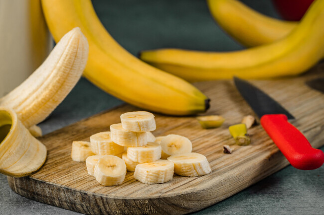
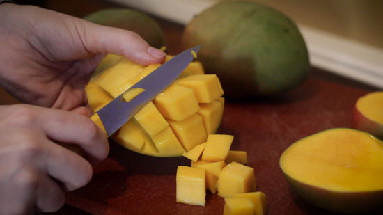
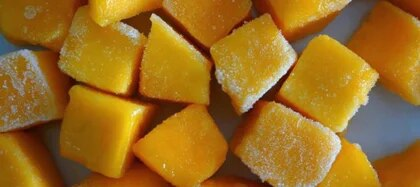
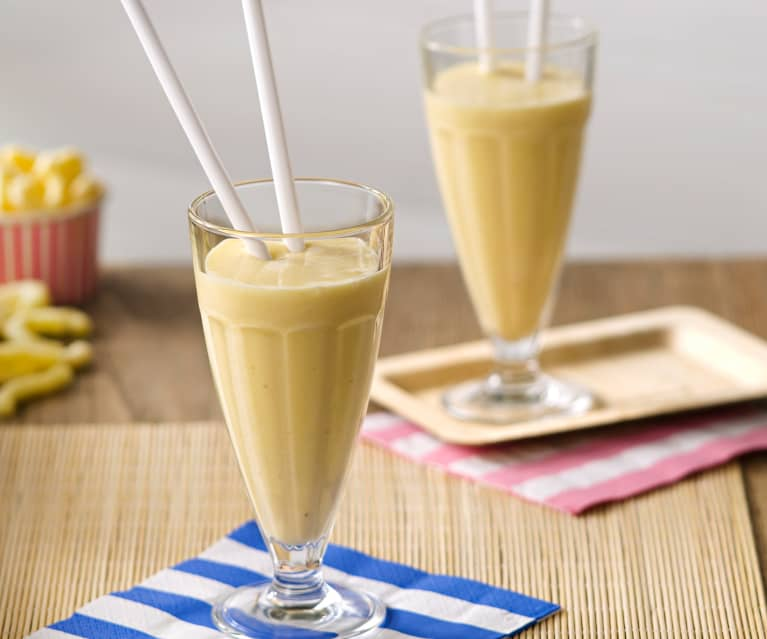
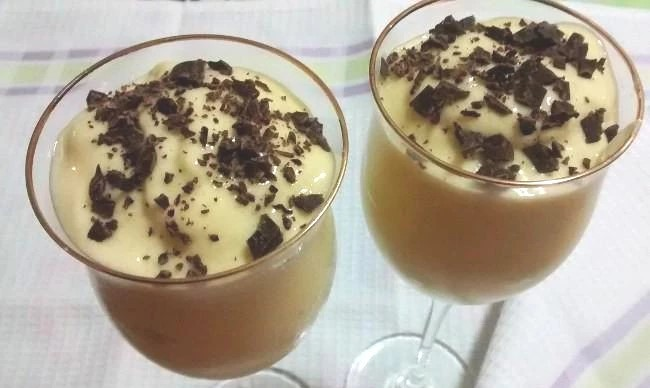

Como preparar un menú saludable
Postre: Sorbete de Mango y Platano
Indice de Contenido:
- Ingredientes
- Paso a Paso
- Resultado Final
Ingredientes
- Pondremos 1 unidad de Mango Mediano
- Añadiremos 2 unidades de Platanos Pequeños
- Cogemos 15 ml de leche
- Añadiremos trocitos de chocolate para decorar
Volver al Indice de Contenidos
Paso a Paso
- Para elaborar este sorbete de mango y plátano debemos comenzar pelando las frutas y cortando trozos de 2 cm de espesor.


- Colocamos sobre un recipiente y lo llevamos al congelador.
- Cuando las frutas estén congeladas, las colocamos en una batidora junto con la leche y procesamos hasta formar una preparación cremosa homogénea.


- Servimos en copas o recipientes individuales y decoramos con una cucharada de chocolate picado.

Volver al Indice de Contenidos
RESULTADO FINAL

Volver al Indice de Contenidos